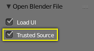
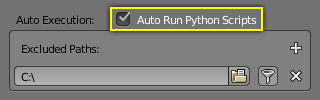

Усунення утруднень¶
Деякі поширені проблеми можуть виникати у людей при використанні драйверів.
Скриптований Вираз -- Scripted Expression¶
Попередження про Авто-виконання у панелі Drivers.

Попередження про Авто-виконання у заголовку редактора Info.
Стандартно Blender не буде автоматично виконувати скрипти Python.
Якщо ви використовуєте Тип драйвера «Скриптований Вираз» -- Scripted Expression Driver Type, то вам слід відкрити файл з ним як «Довірене Джерело» -- Trusted Source, або увімкнути опцію «Авто Виконувати Скрипти Python» -- Auto Run Python Scripts у «Уподобання Користувача > Файл > Авто Виконання» .

Стяг «Довірене Джерело» -- Trusted Source в Оглядачі Файлів. |

Стяг «Авто Виконання Скриптів Python» -- Auto Run Python Scripts в Уподобаннях Користувача -- User Preferences. |
Властивості Обертання обчислюються в Радіанах¶
Частини Інтерфейсу Користувача можуть обчислюватися в різних одиницях виміру для кутів, обертань. У Редакторі Графів -- Graph Editor при роботі з Драйверами усі кути обчислюються в Радіанах -- Radians.
Драйвери внутрішньо-арматурних Кісток можуть Погано поводитися¶
Існує відоме обмеження -- well-known limitation для драйверів на кістках, що посилаються на іншу кістку в тій самій арматурі. Їх значення можуть неправильно обчислюватися на основі позиції іншої кістки, якщо ви перед тим коригували поточний кадр current_frame. Це може призвести до очевидних спотворень форми, коли рендеринг кадрів переходить у відповідних номер кадру (оскільки blend-файл знаходиться поточно на іншому номері кадру або ви пропускаєте вже рендерені кадри).